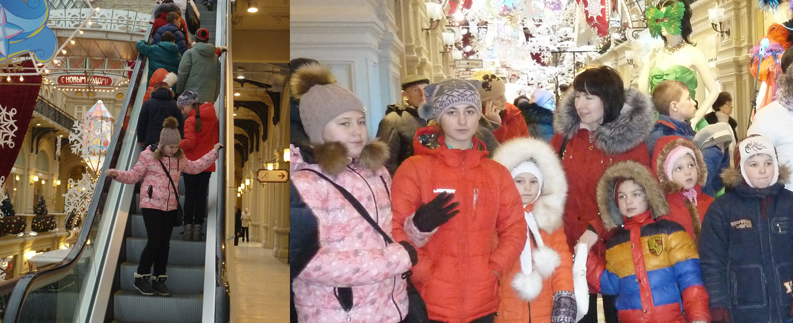
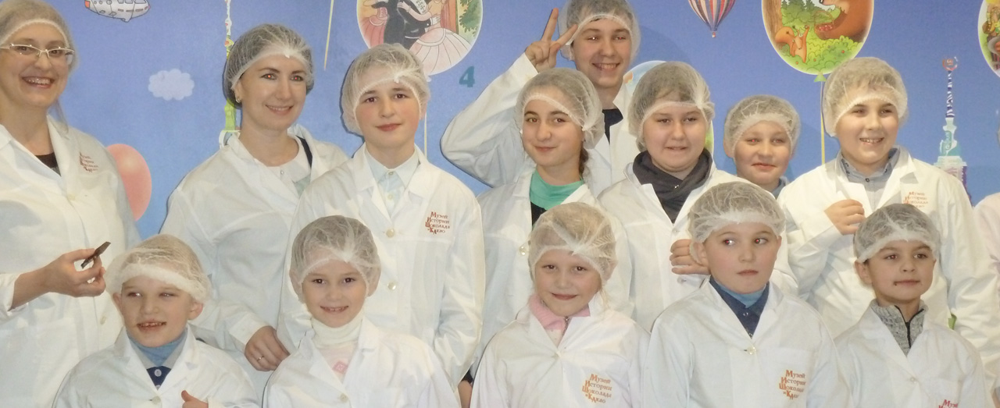

В детском доме праздники значат гораздо больше, чем в любом другом месте.
Потому что дети здесь остро нуждаются в самых обыкновенных чудесах.
В декабре ребята из детского дома в Петровске приехали в Москву, чтобы получить свою частичку новогоднего чуда.
Петровский детский дом рассчитан на 30 детей от года до 11 лет. Поехать на шоколадную фабрику смогли воспитанники старшей группы
(таковы ограничения музея).
Преодолев метель и пробки, ребята оказались на Красной площади и впервые увидели главную елку страны, большой каток и праздничный ГУМ.

Разноцветные карусели очень понравились Юре и Вике, а Ира впервые увидела смену караула у Вечного огня. От таких впечатлений ребята ужасно проголодались. Их вкусно и сытно накормили в столовой в ГУМе.

Экскурсия в музей шоколада превратилась в настоящий праздник - светлый и шумный. Ребята узнали, где и когда появился шоколад и как веками менялся его вкус. С интересом и шутками переоделись в халаты и шапочки, чтобы заглянуть на производство фабрик «Красный Октябрь» и «Бабаевский» и попробовать разные виды шоколада прямо с конвейера. «Нам еще и подарки дали. Каждому!» - радуется Юра.
«Огромное спасибо за поездку от детей и педагогов. Ребята в восторге, столько эмоций! Вы просто волшебники.»
Татьяна Николаевна, директор детского дома